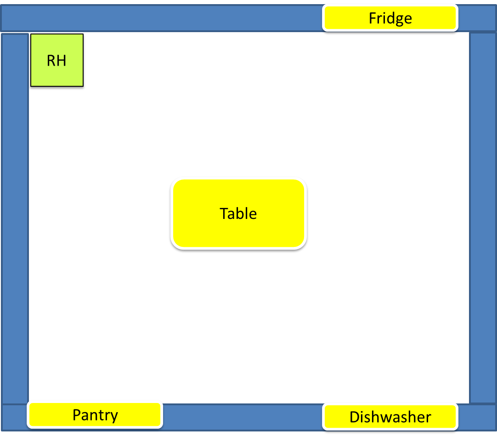

72939 - Final task ISS-2019 Bologna
LabISS-lectures site
Overview
A room dedicated to support a
Standing Buffet Service is equipped with a set of (smart and non-smart) resources including
a
fridge, a
dishwasher, a
pantry, and a ddr robot able to work as a
Room Butler (called from
now on
RBR (
Room Butter Robot).
The
fridge, the
dishwasher and the
pantry are embedded into a wall of the room,
so to exclude any protuberance from the wall itself.
A
Table is put at the center of the room, so that a possible room configuration
looks like that shown in the following picture:
Standing Buffet Service room

|
RH : home location of the RBR
fridge a 'Internet Thing'
For a possible virtual environment, see sceneConfig.js
|
The behavior of the
Buffet Service is supervised by a
Maître de salle (or simply
Maitre)
which can tell the
RBR to perform a set of tasks, including:
- Prepare the room. This task consists in putting on the Table dishes taken from the
pantry, and food taken from the fridge. The set of items to put on the table
in this phase is fixed and properly described somewhere.
- Clear the room. This task consists in bringing non-consumed food again in the fridge and
the dishes in the dishwasher.
- Add food on the table. This task consists in bringing some specific food (if it exists)
from the fridge to the Table.
Thus, the
fridge is intended to be a smart device owning explicit knowledge of the food stored in it.
Moreover, it should be able to answer (via
CoAP) to questions about its content, asked by humans or machines.
The
pantry and the
dishwasher are (at the moment) non-smart resources.
Requirements
Design and build the software to put on board of the
fridge and of the
RBR. In particular,
the
RBR must be able to accept the following commands sent by the
smart-phone of
Maitre:
- prepare: the RBR must execute in autonomous way the Prepare the room task.
- add food: the RBR must execute in autonomous way the Add food task.
- clear: the RBR must execute in autonomous way the Clear the room task.
These tasks are normally executed in sequence, and the main scenario can be summarized as follows:
- At start, the room is empty (i.e. no people is in it, besides the Maitre) while the pantry
and the fridge are filled with a proper set of items. The RBR is in its RH location
and the dishwasher is empty.
- The Maitre sends to the RBR the prepare command and waits for the completion
of the related task. At the end, the RBR is in its RH location again.
- The Maitre opens the room to people. During the service, the Maitre can send to the RBR
the add food command, by specifying a food-code. The RBR executes the task only if food
with the given code is available in the fridge, otherwise it sends a warning to the Maitre. After the task completion,
the RBR returns is in its RH location.
- At the end of the party, the Maitre Maitre sends to the RBR the clear command
and waits for the completion of the task. The RBR returns is in its RH location again.
However, the
Maitre is able, at any time, to
use his/her smart-phone to:
- consult the state of the room, e.g. to known what are the objects related to each resource;
for example, the object currently posed on the Table, in the dishwasher, etc;
- stop or reactivate an activated task.
Finally, the
RBR must be able to
- avoid the impact with mobile obstacles (e.g. the Maitre
or other humans / animals present in the room).
The software to put on the
fridge should make the device able to:
- expose its current content on the Maitre smart-phone;
- answer to questions about its content (e.g. if it contains food with a given code ).
Non functional requirements
- The ideal work team is composed of 3 persons. Teams of 1 or 2 persons (NOT 4 or more) are also allowed.
- The team must present a workplan as the result of the requirement/problem analysis,
including at least one TestPlan.
- The team must present the sequence of SPRINT performed, with appropriate motivations.
- The team must present (in synthetic, schematic way) the specific activity of each team-component.